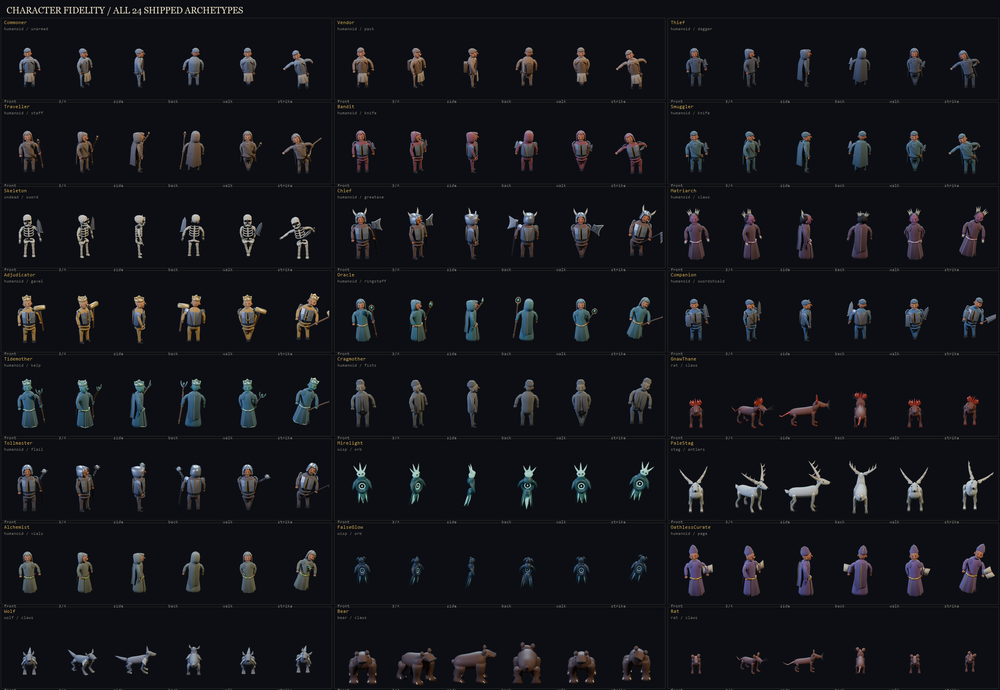

In game
Real seed-42 Bevy captures. Walls, actors and props share depth ordering; nearby masonry fades to preserve sightlines.
All 27 map captures
Regenerate: realmscape {iso,water,lich,iso-burrow,levels}
Environment & doors
Eight authored material families distinguish town pavers, wet crypt cobbles, sanctum inlays, pale Underkeep flags, cave earth, woodland leaf mould, arena slabs and dock timber. Wall coping is separate from the floor; staggered masonry replaces the stacked-plate appearance.

Door joinery / closed and swung-open timber leaves with iron fittings. Passage opens a door automatically; E toggles an adjacent clear doorway. Open state is saved, and occupied thresholds cannot be closed. Capture both states: realmscape doors.
Quality-pass comparisons
- EnvironmentFirst passCorrective passWater correction
- CharactersFirst passCorrective passCorrections
Characters
All 26 production NPCs: 24 shared-roster models plus the independently authored Guard and Lich. Directional animation frames are fitted consistently into 96px atlas cells.

Directional renders and Blender / GLB sources
Player & gear
Six orders, two body builds, four weapon and armour tiers, and nine relic insignia. The plates below read the shipped player atlas, including fitted cuirasses and overlapping lower armour.


Player animation renders and source models
Game UI
Current in-game equipment, conversation and illustrated talent screens. The remaining modal captures are grouped below rather than repeated as separate showcases.
All 14 UI captures
Regenerate: realmscape ui